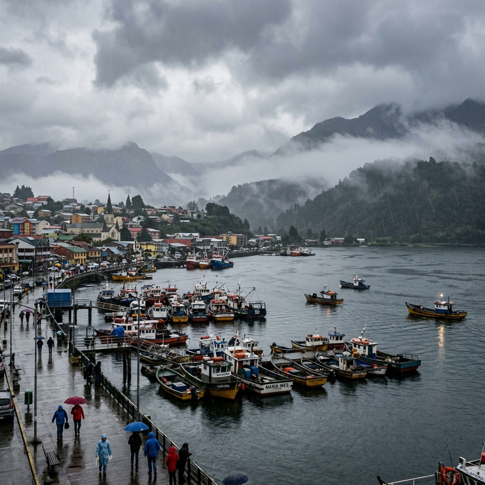

Características Principales:
- Precipitaciones anuales: Superan los 1.600 mm en promedio.
- Temperatura media máxima: En verano alcanza los 19°C.
- Temperatura media mínima: En invierno ronda los 4°C.
Tu ventana al tiempo en la Región de Los Lagos y el sur de Chile
Ingresa el nombre de una ciudad para conocer su información meteorológica en tiempo real.
Condición: Lluvia Débil / Nublado
Temperatura: 11°C
Sensación Térmica: 9°C
Humedad: 92%
Viento: Oeste a 18 km/h
Última actualización: Hace 10 minutos

Puerto Montt cuenta con un clima templado lluvioso o marítimo lluvioso, caracterizado por precipitaciones abundantes durante gran parte del año. A diferencia del norte del país, aquí las lluvias se presentan en todas las estaciones, siendo el invierno la época más lluviosa y con temperaturas más bajas.